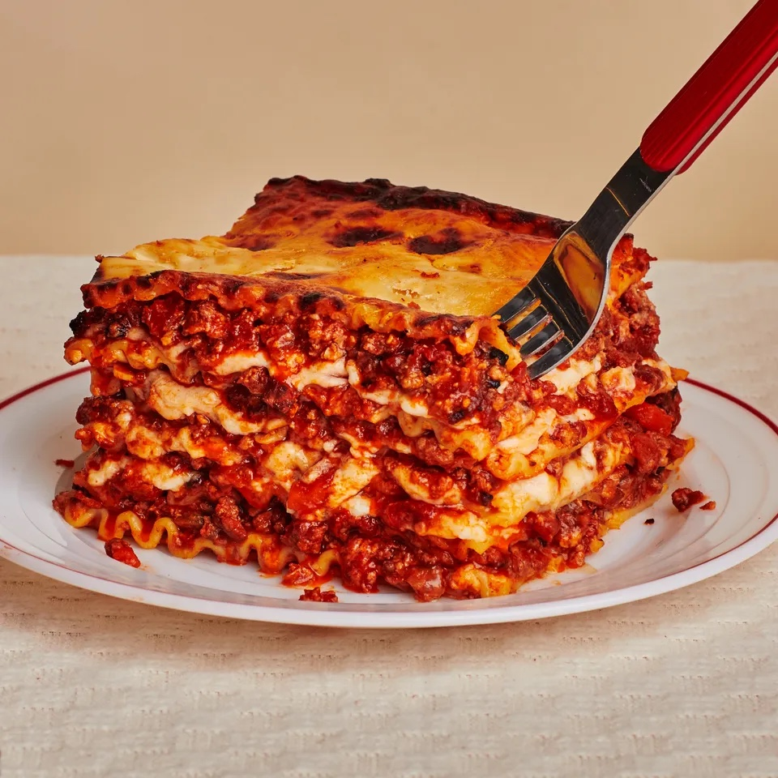

Lasagna

Food Description
Lasagna is a wide, flat sheet of pasta. Lasagna can refer to either the type of noodle or to the typical lasagna dish which is a dish made with several layers of lasagna sheets with sauce and other ingredients, such as meats and cheese, in between the lasagna noodles.
Ingredients
- lasagna noodles
- 1 pound ground beef
- 1 jar (24 ounces) of your favorite marinara sauce
- 1 container (15 ounces) ricotta cheese
- 2 cups shredded mozzarella cheese
- 1/2 cup grated Parmesan cheese
- 1 egg
- 2 tablespoons fresh parsley, chopped
- Salt and pepper
Steps
- Preheat your oven to 375°F (190°C).
- Cook lasagna noodles according to package instructions, then drain and set aside. Add a little oil to the water to prevent sticking.
- In a skillet over medium heat, brown the ground beef until no longer pink. Season with a little salt and pepper. Drain any excess fat.
- Stir the marinara sauce into the cooked meat and simmer for about 5 minutes. This is your meat sauce.
- In a bowl, mix ricotta cheese, 1 cup of mozzarella cheese, the Parmesan cheese, and the egg. This is your cheese mixture.
- In a 9x13 inch baking dish, start with a layer of meat sauce, then a layer of noodles (3 should fit across), and a layer of the cheese mixture. Repeat the layers, ending with meat sauce on top.
- Cover the baking dish with aluminum foil and bake for 25 minutes. Then, remove the foil, sprinkle the remaining mozzarella cheese on top, and bake uncovered for an additional 10-15 minutes, or until the cheese is bubbly and golden.
- Let the lasagna cool for about 10 minutes before slicing. Garnish with chopped parsley if desired, and serve warm.
Enjoy your meal! This simple recipe brings a taste of Italy right into your home with minimal effort.